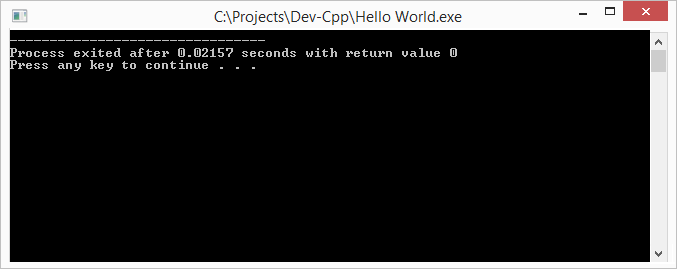

Урок C++ №1
В этом уроке вы узнаете об
Основах С++
Создайте новый проект в вашей IDE. Исходя из предыдущего урока, у вас установлен Dev-C++.
Заходим в него и нажимаем Ctrl+N. Компьютер попросит выбрать место для исходника а также имя. Укажите удобное вам расположение и имя исходника.
Открылся обратно Dev-C++, и скорее всего вы совершенно не знаете что туда писать. Тогда начинаем потихоньку учить С++!
Начинаем писать программы!
Задача программиста - обьяснить компьютеру, что от него требуется.
Но компьютер очень глупый, и втолковать ему что-нибудь довольно сложно. Нужно построить четкий алгоритм и не совершить ни единой ошибки.
В С++ алгоритм содержится в таких вот {} скобках, и называют их составной инструкцией.
Если перед составной инструцией указать " int main() ", мы получим составную инструкцию, в которой будет выполнятся весь код. Туда мы ничего не напишем (а только в уроке 2).
Итак, первый тест кода
напишите в свой исходный файл
- int main(){
- }
Попробуйте скомпилировать программу Напоминаю, F11. У вас получилось нечто вроде

Что это? Ведь наша программа ничего не делает! На самом деле это она и не делает, а делает это Dev-C++.
Он выводит текст с информацией (в переводе):
Процесс завершился за 0.02157 секунд и вернул значение 0
Нажмите любую клавишу, чтобы продолжить...
Это отладочная информация, необходимая программисту, чтобы узнать состояние программы и чтобы она попросту не закрывалась после выполнения автоматически.
Как вывести текст самому, вы узнаете далее, в следующем уроке!